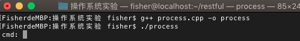
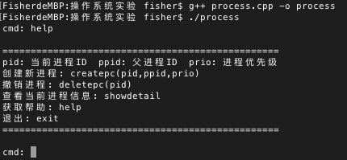
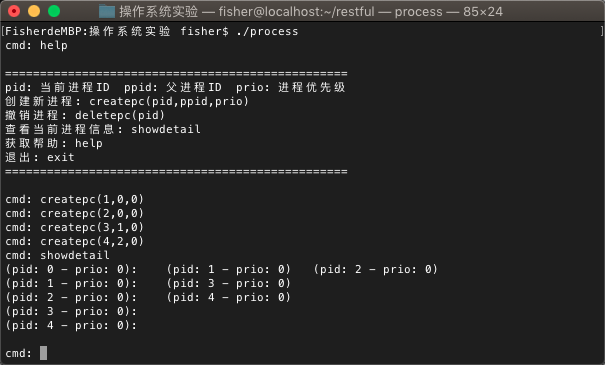

前言
操作系统系列博客的所有实验源自于课程"操作系统原理与实践检验"，代码是参考老师给的"软件工程专业操作系统实验指导书"文档后的改进版本。操作系统是计算机系统的核心，因此了解操作系统的设计和实现思路是必不可少的。了解操作系统的基本要求是：理解进程的概念，理解死锁，掌握银行家算法；掌握页式储存管理的实现原理以及页面置换法
实验目的
实验内容
本实验针对操作系统进程撤销相关理论进行实验。要求实验者设计一个程序，该程序可以模拟撤销多个进程及其子孙进程
- 采用动态或静态方法生成一颗进程树（进程数目>=20）
- 设计进程撤销算法
- 实现进程撤销函数，采用级联方法撤销
- 可动态撤销进程
- 可动态观察进程树的情况
- 测试程序并获得正确结果
实验过程
- 首先我们需要从进程总链中找到要撤销的进程。如果查找不成功，则进程撤销操作结束，返回查找不成功消息
- 找到要撤销的进程之后，我们需要查找该进程的父进程。如果该进程没有父进程，我们认为这个进程是进程总链和进程树的根节点，根节点不可以被撤销
- 将要撤销的进程从进程树上截下。由于我们使用的是广义二叉树中的
孩子兄弟表示法，因此我们需要判断要撤销的进程是否为父进程的第一个节点。如果是第一个节点，则直接置父进程的孩子节点为NULL即可；如果不是第一个节点，则需要在兄弟链中摘除节点
- 撤销进程树，从进程总链上摘除。我们使用递归的方法遍历撤销进程及其子孙，同时将其从进程总链上摘除
代码汇总
basicpcb.h和process.cpp的代码已经在上一篇博客中定义，我们只需要将下面的代码附加到process.cpp文件中，注意代码位置即可
进程树撤销
进程树的撤销使用了递归的方法
1
2
3
4
5
6
7
8
9
10
11
12
13
14
15
16
17
18
19
20
21
|
void deltree(pnode *tbd)
{
for (pnode *p = plink; p; p = p->next)
{
if (p->next!=NULL && p->next==tbd)
{
p->next = tbd->next;
break;
}
}
if (tbd->brother != NULL)
{
deltree(tbd->brother);
}
if (tbd->sub != NULL)
{
deltree(tbd->sub);
}
delete tbd;
}
|
进程撤销
1
2
3
4
5
6
7
8
9
10
11
12
13
14
15
16
17
18
19
20
21
22
23
24
25
26
27
28
29
30
31
32
33
34
35
36
37
38
39
40
41
42
43
44
45
46
47
48
49
50
51
52
53
54
55
56
57
58
59
60
61
62
63
64
65
66
67
68
69
70
71
72
73
74
75
76
77
78
79
80
81
82
83
84
|
int deletepc(int *para)
{
if (para[0] == 0)
{
printf("Root process(pid:0) can not be deleted!\n");
return -1;
}
pnode *p, *ptree_previous, *tbd;
int pflag = 0, tbd_ppid = -1;
for (p=plink; p; p=p->next)
{
if (p->node->pid == para[0])
{
tbd_ppid = p->node->ppid;
tbd = p;
pflag = 1;
break;
}
}
for (p=plink; p; p=p->next)
{
if (p->node->pid == tbd_ppid)
{
ptree_previous = p;
break;
}
}
if (!pflag)
{
printf("Process pid %d not found!\n", para[0]);
return -2;
}
if (tbd_ppid < 0)
{
printf("Process parent(pid:%d) not found!\n", tbd_ppid);
return -3;
}
if (ptree_previous != NULL)
{
if (ptree_previous->sub == tbd)
{
ptree_previous->sub = tbd->brother;
tbd->brother=NULL;
}
else
{
for (p=ptree_previous->sub; p; p=p->brother)
{
if (p->brother == tbd)
{
p->brother = tbd->brother;
tbd->brother = NULL;
break;
}
}
}
}
deltree(tbd);
return 0;
}
|
CMD指令解析
我们需要修改processterminal()函数中的代码，更新cmd指令
1
2
3
4
5
6
7
8
9
10
11
12
13
14
15
16
17
18
19
|
if (strstr(cmdstr, "deletepc"))
{
int *para;
char *s;
cflag = 1;
int start = instr(cmdstr, '(');
int end = instr(cmdstr, ')');
s = substr(cmdstr, start+1, end-1);
para = (int *) malloc(1);
para = strtoarray(s);
deletepc(para);
pflag = 1;
}
|
实验测试
编译并运行程序
g++ process.cpp -o process

使用help命令查看帮助

使用createpc命令自行创建进程，可以创建一个子孙进程比较多的进程。使用showdetail命令查看进程信息

使用deletepc命令撤销进程，使用showdetail命令查看撤销后的进程信息。可以从下图中看出，我使用了deletepc(1)撤销了pid=1的进程，并且pid=3的子孙进程也相应的被撤销了
总结
在本次实验中，我们模拟了进程的撤销。在实际的操作系统中，进程的撤销还需要涉及资源的释放、回收等操作，系统还需要对该进程的信息进行收集，例如：进程异常结束时，系统需要收集异常信息，发送异常报告。但其核心就是进程树、进程总链上的摘除，我们了解掌握其核心即可
课后思考
进程撤销的核心是什么？
答：进程撤销的核心是将进程及其子孙进程从进程树和进程总链中摘除，释放其占用的资源，并且保证不破坏现有的进程树和进程总链结构
进程总链在进程撤销的过程中有什么作用？
答：进程总链能够快速定位我们需要查找的进程，如果通过进程树查找进程，我们需要耗费较长的时间，这在系统级操作中是不允许的